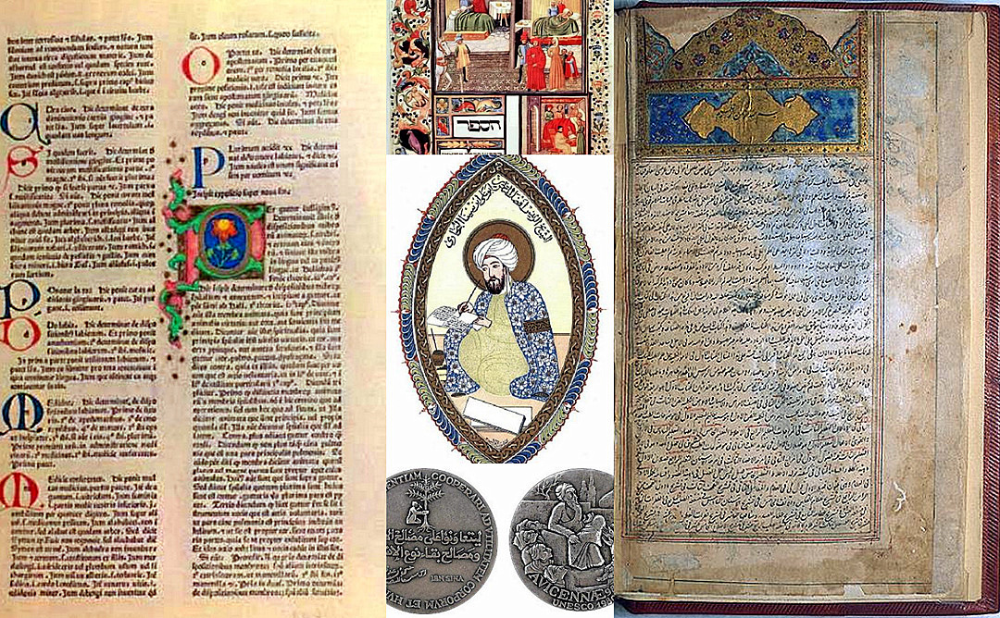

FCIH Hospital
Your Health Is Our Proiority
The Sheikh al-Ra'is Sharaf al-mulk Abu 'Ali al-Husayn b. 'Abd Allah b. 'al-Hassan b. 'Ali Ibn Sina, in Latin he is Know as Avicenna and his most famous Works are those on philosophy and medicine. His philosophical views have engaged the attention of Western thinkers over several centuries, and his books have been among the most important sources in philosophy. in medicine, his encyclpedic book, al-Qanun (The Canon) - Al Qanun Fi Al-Tibb (The Canon of Medicine)- Was translated into Latin towards the end of the twelfth century CE, and became a reference source for medical studies in the universities df Europe until the end of the seventeenth century.
***
[Ibn Sina, or Avicenna, lived in Hamadan and Jurjan from 980 to 1037 CE, and acquired great fame in mediaeval European medicine].
In al-Qanun, Ibn Sina basically followed the methodical, analytical line
originated by al-Razi. Al-Qanun Was, however, more broadly
conceived
than Al-Hawi(the Continens and included all branches of medical science).
According to Desons, most of the disesaes of the kidneys and bladder can be recognized in the systemic classification of renal diseases and the accounts of bladder diseases given by Ibn Sina in al-Qanun. He was also the first to point out the fact that haematuria may be due to causes outside the urinary system, for example, blood diseases.
Apart from the methodical classification and precise descriptions of aetiological factors and signs in his chapter on urinary disturbances, Ibn ina pointed out the role of psychological factors in the treatment of certain cases of nocturnal nuresis.
Both Ibn Sina and al-Razi warned against catheterization in the presence of inflammation, as it increases the swelling and pain. To ensure gentle catheterisation, Ibn Sina designed catheters with rounded, firm tips and many side holes from the skin of certain marine and other animals.
The al-Hawi, at-Tasrif and al-Qanun were translated into Latin as early as 1150 CE by Gerard of Cremona and greatly influenced the European Mediaeval schools of medicine well into the eighteenth century.
Ibn Sina has attracted the attention of scholars, past and present, who have written books, treatises and articles on him. One of these aspects, however,
has not been very widely discussed, namely his views on education.
Although Ibn Sina's writings on this subject, in comparison with his vast output on other subjects, are in fact considered to be very scarce, we do nonetheless find he deals with the same problems that confront educators today. He speaks about humanity, society, knowledge and ethics. He devoted a treatise entitled ‘Politics' to education; and he speaks at some length in ‘The Canon' about the upbringing of infants. Thereby, Ibn Sina represents a lively illustration of the meeting between philosophy and education, for the educator and the philosopher are both faced with the same problems: truth, goodness, the nature of the world, the meaning of knowledge and human nature, and so on. Obviously, Ibn Sina the philosopher has his own views on education. In addition, if we consider that Ibn Sina undertook teaching on a practical level for a considerable length of time, we realize that we have here a thinker whose philosophy was transformed into an educational theory that he himself practiced.
The human being, in Ibn Sina's view, consists of both hidden (sirr) and open (‘alan) elements. Known to us is the perceptible human body with its organs and its cells. ‘Sensory perception stops at its exterior, while anatomy (dissection) enables us to learn about the interior; the hidden part consists of the powers of its mind. These mental powers motivate the human being, and cause it to carry out its various activities and behave as a human being'. To Ibn Sina, the human is a tangible body on the outside, revealed within by means of anatomy as we see in his books, such as Al-Qanun (The Canon) and we do not find any difficulty today in accepting this. We still have to look at the mental powers or faculties that motivate this body
This lasts from the third to the fifth year, at the time when ‘the child's body strengthens, his tongue is free, and he is ready for instruction, and his hearing is attentive'. In ‘The Canon', he defines the start of the sixth year as the end of that stage, whereupon he enters ‘the stage of primary teaching'. Ibn Sina says: ‘And when he has reached the age of 6 years, he should be brought to the tutor and the teacher'. We see Ibn Sina not concerned here with any specific kind of teaching, but merely with creating a happy childhood as regards physical, mental and moral health.
The seventh and last art mentioned in the fourth book of the Canon is assigned to the topic of "zina" ("ziynet" in Turkish), that is physical appearance. It consists of four articles. Although the term "zina" calls to mind ornament and ornamentation, when we take a look at the text in the Canon, we may observe that it deals with appearance. That is to say the hair and body care; as well as skin diseases and their treatment. What is more, it also refers to subjects such as obesity and emaciation that affect the appearance, and preventive methods and measures for all of these are discussed.
This article is based on the Turkish version of the Canon. It is important to note however, Mustafa b. Ahmed b. Huseyin of Tokat, who translated it into Turkish, in the 18th century, often used medical Arabic terminology and some idioms that may not be found in most contemporary Ottoman dictionaries. It is a literal translation, yet most of the terms of Arabic origin that are found in it have different meanings from those of today. For this reason, in order to comprehend thoroughly the medicine of Ibn Sina, we must first perform an exhaustive study of the meanings of the medical terms used in the medical literature of the period. Only after this may we wholly understand the old medical texts. If we cannot aptly comment on the theories regarding the etymology of illnesses or, in other terms, the "philosophy of medicine", I believe that it will be impossible to thoroughly comprehend ancient medicine.
And many more resources can be found in Muslim Heritage related to the Ibn Sina's The Canon of Medicin Muslim Heritage
Despite a general assessment favouring al-Rāzī’s medical contributions, many physicians historically preferred Avicenna for his organization and clarity. Indeed, his influence
over Europe’s great medical schools extended well into the early modern period. There The Canon of Medicine (Al-Qānūn fī al-ṭibb) became the preeminent source, rather than al-Rāzī’s
Kitāb al-ḥāwī (Comprehensive Book).
Britannica 1 Britannica 2